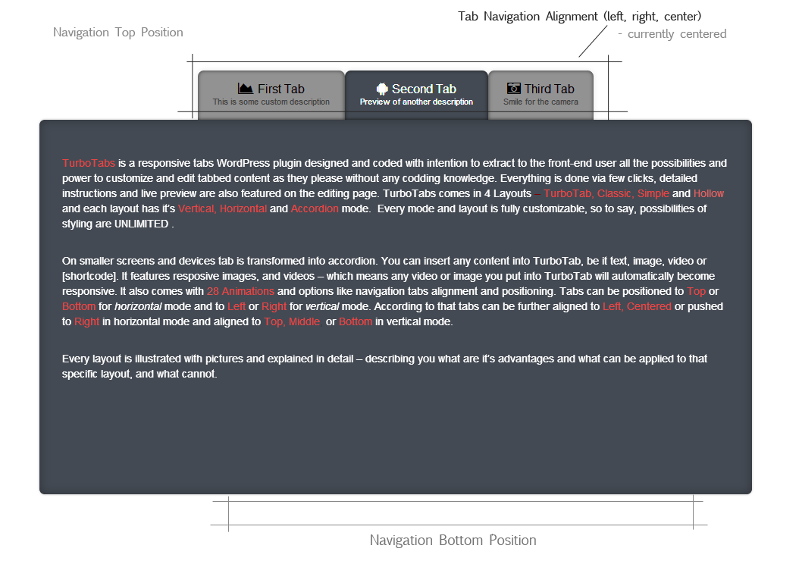
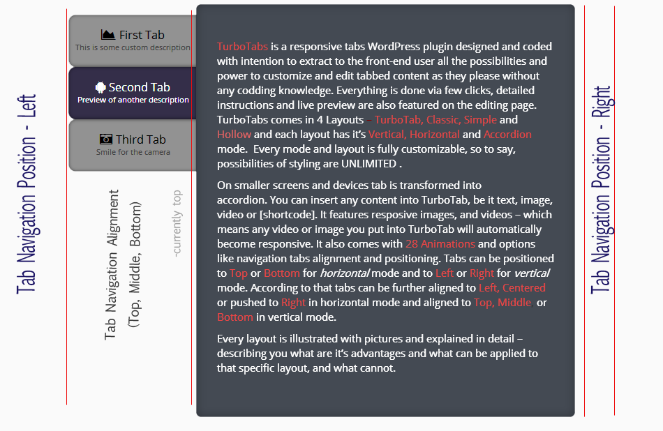
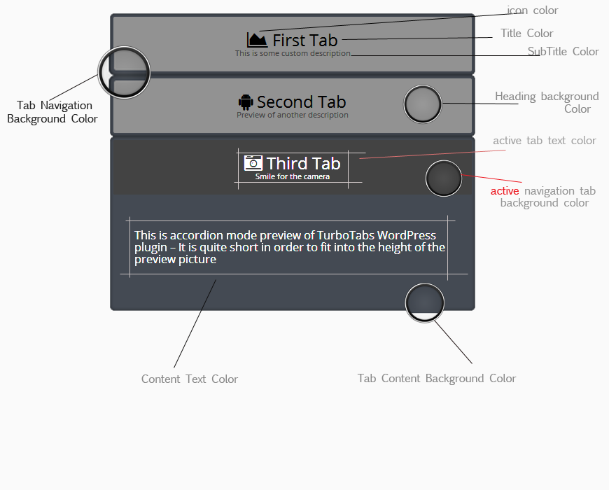
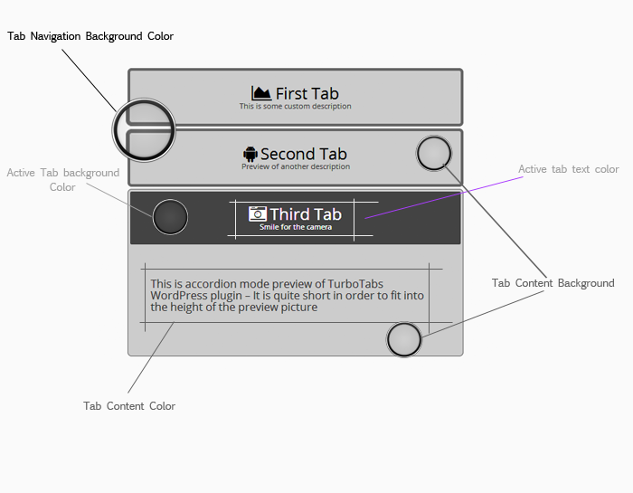
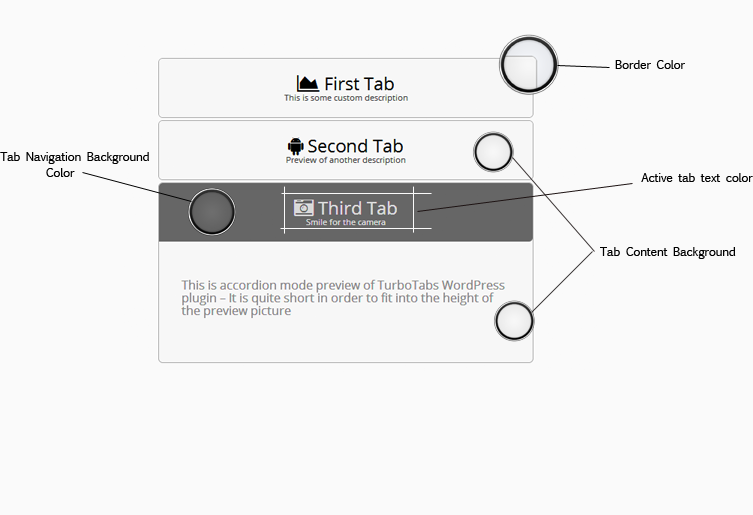
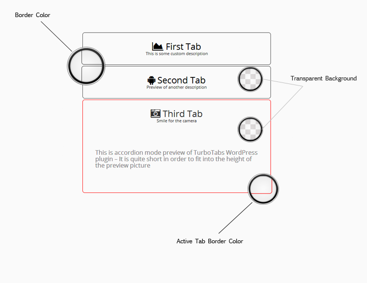

Thank you for purchasing my plugin. If you have any questions that are beyond the scope of this help file, visit my support forum. Thanks so much!
There are three modes available:
All of the styling options affect both vertical and horizontal modes the same way. The main difference is Accordion mode, that one I will cover more briefly.
Horizontal mode anatomy:
Vertical mode anatomy:
Most of the illustration for this accordion is the same for every other (like icon color, text color, etc.) so in order not to repeat it, I will mention them only in this picture and for other layouts illustrate only the ones that matters.
Illustration
Illustration
Illustration
